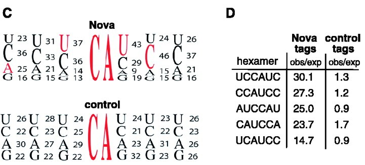
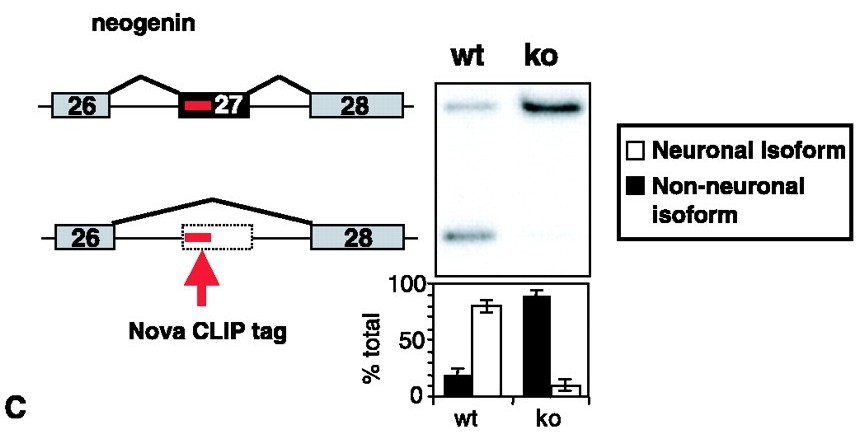
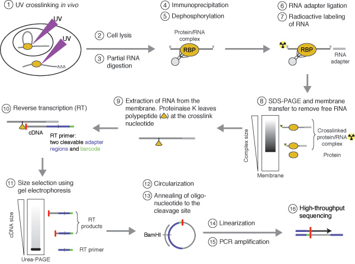

HITS-CLIP
Identify RNA-RBP Direct Interactions in Genome-wide Scale
Fast Introduction to HITS-CLIP (or CLIP-seq)
Yun YAN
Directly Identify RNA-RBP Interactions in Genome-wide Scale
HITS-CLIP (or CLIP-seq)
HIThroughput Sequencing of RNAs isolated by Crosslinking ImmunoPrecipitation
Boring Definition
Well, for short
CLIP-seq = Chip-seq
but, RNA version :P
CLIP-seq = CLIP + Sequencing
Standard CLIP-seq Pipeline

UV-Crosslink -> IP -> Purify -> Sequencing
Why CLIP?
Identify candidate target RNA
RIP-Chip, indirect or non-phisiological interactions
UV-Crosslink and IP, Direct interactions
What Will CLIP-seq Date Offer?
Precise Binding Position
Besides candidate target RNA motif

Robert B. Darnell, etc. CLIP identifies Nova-Regulated RNA networks in the brain. Science. 2003.
Potentially recuited to machinery

Tag detected + Significant difference between Ctrl/Knock-out:
It is indicated that NOVA is recuited to influence splicing.
Robert B. Darnell, etc. CLIP identifies Nova-Regulated RNA networks in the brain. Science. 2003.
CLIP Update
iCLIP
PAR-CLIP
individual-nucleotide resolution CLIP
iCLIP - Transcriptome-wide Mapping of Protein-RNA Interactions with Individual Nucleotide Resolution. J Vis Exp. 2011.

Classic CLIP:
- cDNAs truncate prematurely at the crosslinked nucleotide
- Truncated cDNAs are lost during the standard CLIP library preparation protocol
iCLIP:
More efficient intramolecular cDNA circularization
Photoactivatable-Ribonucleoside-Enhanced Crosslinking and Immunoprecipitation
PAR-CliP - A Method to Identify Transcriptome-wide the Binding Sites of RNA Binding Proteins, J Vis Exp. 2010.
Classic CLIP:
- Low efficiency of UV 254 nm RNA-protein crosslinking
- Difficult to separate UV-crosslinked target RNA segments from background non-crosslinked RNA fragments also present in the sample
PAR-CLIP:
Rely on 4-thiouridine (4-SU) and 6-thioguanosine (6-SG)
- UV 365 nm induces efficient crosslinking of photoreactive nucleoside-labeled cellular RNAs to interacting RBPs
- 4-SU: T->C transitions
- 6-SG: G->A mutations. The presense of the changes can be assessed during bioinformatic analysis, and make it possible to seperate them from the background of sequences derived from abundant cellular RNAs.
Summary
- HITS-CLIP (or CLIP-seq)
- Exact binding position
- Direct interaction, candiate target RNA
- iCLIP and PAR-CLIP
Check source code at: https://github.com/Puriney/clipseq